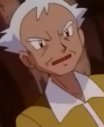

|
Kenzo Hinode |
A Whisker Away |
Kenzo Hinode is a grandfather of Kento Hinode. He enjoys making potttery and has a studio. |
|  |
Pryce |
Pokemon |
Pryce is the Gym Leader of Mahogany Town's Gym. He is an expect in Ice-type Pokemon. Pryce was once a fiercely competitive in his young days until his Piloswine left. He was once sad but joy and optimism. |
 |
Wang Wei |
Cardcaptor Sakura |
Wang Wei is the attendant that comes with Syaoran Li when he first moves to Japan. He is a kind elderly man. He has teaching martial arts to Syaoran and Meilin. He is very supportive, very polite and well-mannered. |